Pakhala Bhata
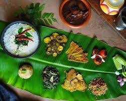
A lunch staple for almost every household in the state of Odisha, Pakhala Bhata offers a delectable respite from the summer heat. Made from soaking cooked rice in sour curd and water, this dish from Odisha is served with fried fish, potatoes, Badi choora, and papad on the side. Being a popular food and main food of Odisha, this delicacy should be one of your first dishes to try on your trip to Odisha.
Gupchup
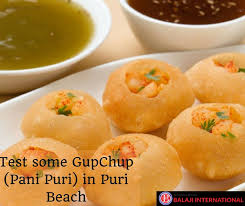
Gupchup, which is known as ‘puchka’ in Bengal, ‘golgappa’ in the north, and ‘panipuri’ in western India, is the nation’s favourite food. In this dish, crunchy hollow balls made from maida, atta, or suji; filled with chana masala and dipped in spicy jal jeera, just enough to take your taste buds on a whirlwind of flavours. The sheer burst of the gupchup in the mouth, one of the most famous dishes of Odisha, makes this crispy wonder an absolute delight that one can binge-eat on their trip to Odisha.
Chhena Poda
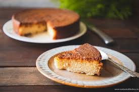
Say hello to the cheesecake of Odisha – Chhena Poda. You will be left obsessing over this delicacy long after eating it. Baked for hours at a stretch, this dish is made from burnt home-made cottage cheese, sugar syrup, and semolina. The caramelized sugar of Chhena Poda imparts a distinctive taste to it and is one of those dishes of Odisha which you can find in every lane and by-lane of the state.
Pilaf
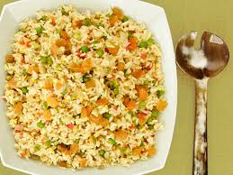
Pilaf or pulao is one of the most famous dishes of Odisha. It is a scrumptious rice dish that is sautéed with oil until it turns golden brown in colour. The refreshing aroma of the mixed spices seems to draw you toward this delicacy and makes for a great self-indulgent supper when you tour Odisha. The dish is also prepared in different varieties in various cultures wherein vegetables, dry fruits, and meat are added into it to give the dish a one-of-its-kind twist.
Santula
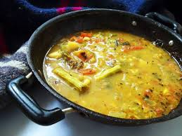
One of the main food dishes of Orissa/ Odisha, Santula is a classic Oriya delicacy that you can slurp and slurp even more on your trip. Made with raw papaya, brinjal, and tomato, the dish has more greens and fewer spices, thereby having all the makings for a healthy dish.
Rasabali
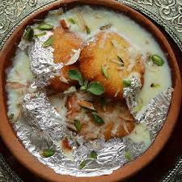
Those with a sweet tooth are going to love this famous dish of Odisha known as Rasabali. Socked in thick flavoured milk and garnished with cardamoms, this sweet dish is a delicacy that originated from Kendrapara district in Odisha.
Pitha
Pitha is a cereal-based steamed cake that will tantalize your taste buds just like the other dishes of Odisha. Being a famous dish of Odisha, the dish is made in the form of many variants such as poda pitha, chakuli pitha, and many more. Being one of the special delicacies of Odisha, they are cooked both on special occasions and as a common dish in Odisha’s households. Here is a little more about the variants of pithas:
Chakuli Pitha: It is made from black gram cereal and is a crispy delight to munch on during your trip.
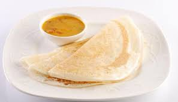
Poda Pitha: It is a great tasting delicacy known for its rich texture. Prepared during festivals, this variant of pitha has a nice-smelling aroma.
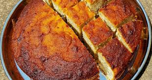
-
Kakara Pitha: Made from semolina, cardamom, and grated coconut, these sweet fritter is a popular dish of Odisha.
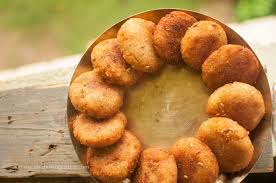
Chaula Bara
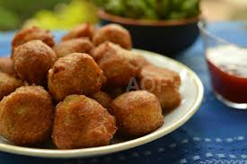
Odisha’s very own Chaula Bara (rice vadas) is a lip-smacking delicacy that leaves you salivating for more. Gobble up this snack after you dip them in delicious spicy and sour chutney. It is easily one of the most famous dishes of Odisha that is perfect to eat in between your tour to satiate your hunger pangs.
Khaja
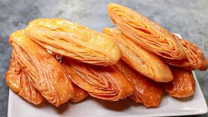
Served as a prasad in the temple of Lord Jagannath on a daily-basis, Khaja is one of the most delicious dishes of Odisha that you can easily find in every nook and corner of the city of Puri in Odisha. Refined wheat flour is mixed with sugar and fried lightly in some oil to make this delicious dish.
Potala alu rasa
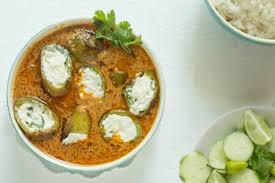
Potato Alu Rasa is one of the famous dishes of Odisha which is composed of potatoes, diced pointed gourd, spices, and sautéed bay leaves. The dish is something that you should not miss out on your trip to Odisha. The tasty flavours of potato alu rasa are bound to stay with you long after your trip to Odisha.
Odisha should not just be explored for the archaeological wonders it houses and the astounding natural beauty it has, but also for its diverse cuisine which makes your travelling experience an even more satisfying one. With a plethora of places to visit in Orissa and local foods to try, who knows, you might end up adding a famous dish of Odisha to your own list of favourite foods.